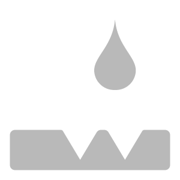
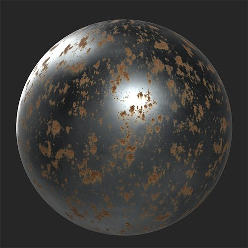

In: Wear and Finish
Use the Rust filter to add a layer of oxidized metal to your material.
In the images below you can see a metal material before and after adding the Rust filter.

Basic parameters
Rust
Peel
Drips
Mask